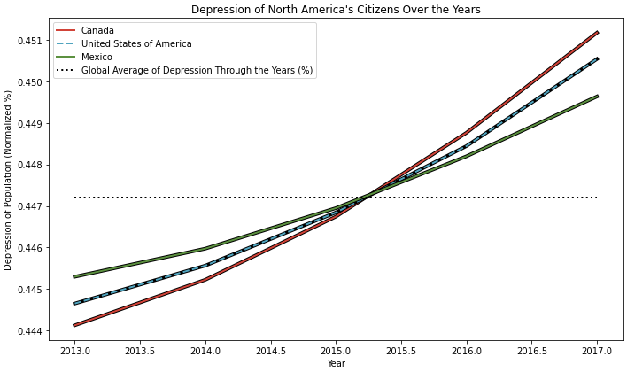
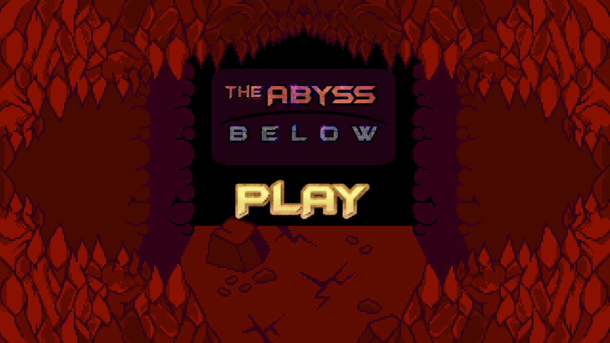

Computer Science Bachelor's Student | Ontario Tech University
Hi my name is Jeremy Thummel, I am in my second year of
Computer Science with Honours at Ontario Tech University.
•
On this website you will find various programming projects I have worked on.
The projects are a mix of personal and school-related, and showcase my programming capabilities.
For further information on myself, attached below is my résumé:
Mental Health Versus Screen Time Study
(Click Here)
Jupyter Notebook - University Summative

•
This project demonstrates my Python abilities,
and my familiarity with its many libraries.
The assignment reveals interesting trends involving
a person's time spent on technology and their mental health.
This project was programmed in my second year of University
as part of my program for a Bachelor's in Computer Science.
Video Game Project (Click Here)
The Abyss Below

•
This video game was made by a small team including myself.
during my Grade 11 year of high school.
I took a lead role in designing and coding the layout
of HTML elements. I also was responsible for coding
the initial framework and progression of the video game's battle system.
Additionally, I created almost all the artwork assets.